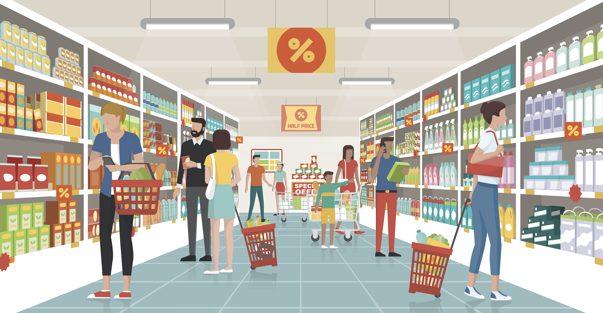

Érdemes észben tartani, de ha nem megy, itt a megoldás!
Cikk a vásárlási szokásokról

Vásárlási szokások a koronavírus járvány idején
A járvány elején a vásárlási szokások radikálisan megváltoztak. Ezek a szokások azóta
normalizálódtak, azonban vannak olyanok, amelyek feltehetően tartósan megmaradnak. Ezekről
szeretnénk kicsit részletesebben beszélni.